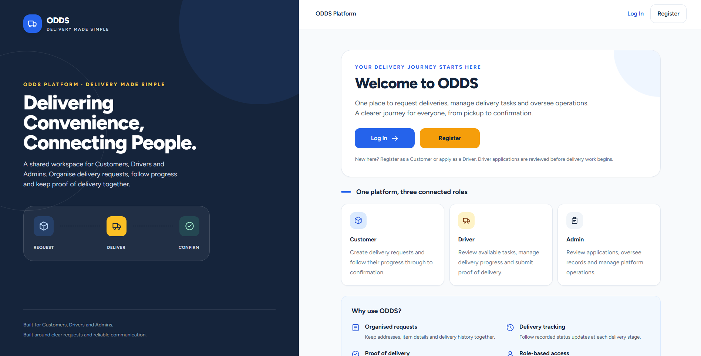

Individual Final Year Project
On-Demand Delivery
Management SystemODDS
An on-demand delivery platform I'm developing with Laravel, PHP and MySQL, bringing Customer, Driver and Admin workflows into one system.
Current development focuses on delivery requests and management, driver availability and order acceptance, vehicle management, and administration and approval workflows.
- Laravel
- PHP
- MySQL
An ongoing build. Features and workflows are still being developed and refined.
